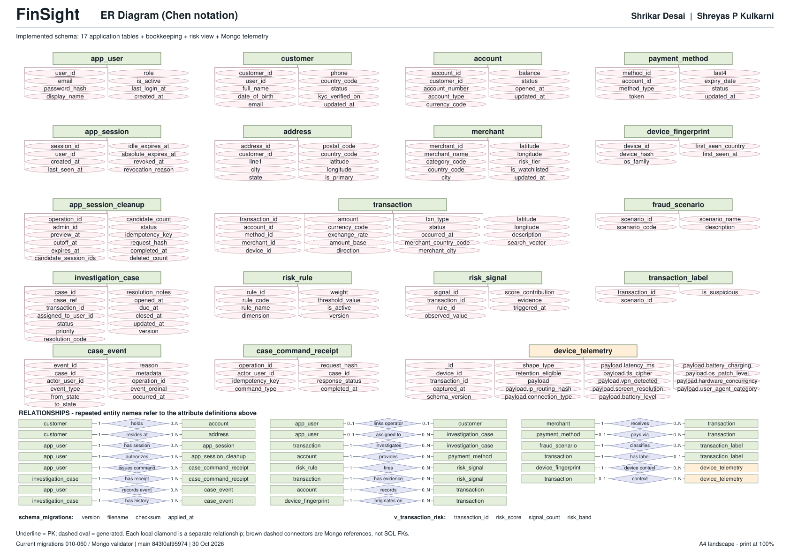
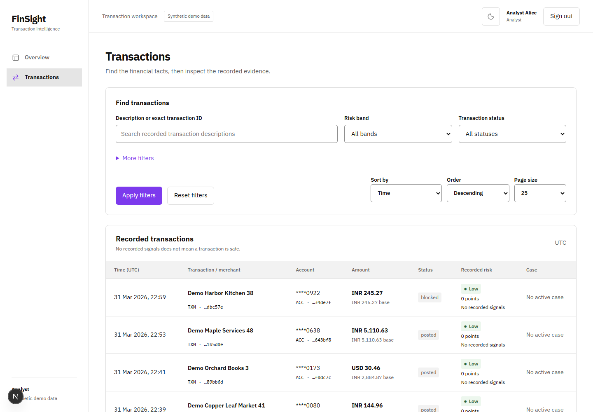
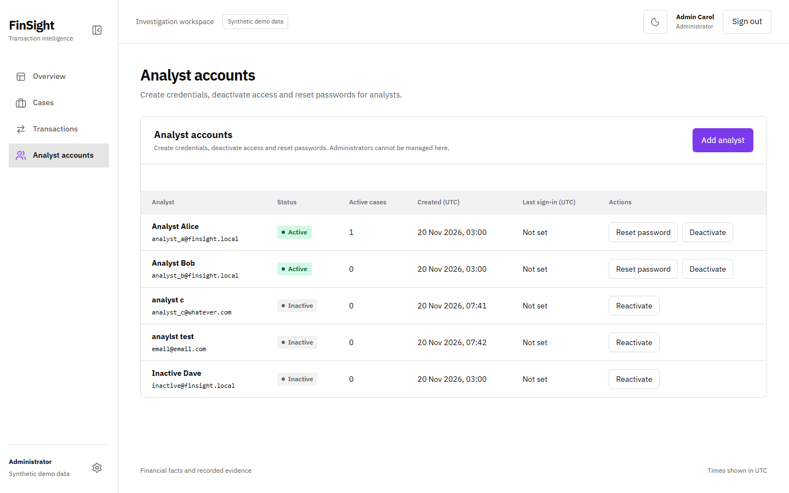

Transaction review with explainable risk and auditable case records
A Next.js application using PostgreSQL 17 as the system of record and MongoDB 8 for read-only device telemetry. All demonstration data is synthetic.
This report describes FinSight, a transaction review application built for the DBMS Level 3 project. PostgreSQL 17 is the primary database and stores customer, account, transaction, risk, identity, session and case data in 18 application tables. Two deterministic rules score synthetic transactions, and each stored signal records the observation, threshold and point contribution behind the score. Case changes are made through database functions that check the actor, ownership, expected version and idempotency key. Case events and administrative audit rows reject updates and deletes. MongoDB 8 stores device telemetry that does not fit the relational model; it is read-only and bounded to the latest 100 observations.
The Next.js interface supports analyst and administrator roles. Verification includes 104 unit tests, 95 API tests, 24 database tests and 17 browser tests, the VS01 to VS16 acceptance matrix, five indexed query plans and six passing continuous integration workflows. The report also records the limits of the implementation: two risk rules with a 65 point maximum, read-only telemetry, in-process login throttling and no fraud prediction.
| Course | DBMS UE24CS351A, Semester 5 |
| Team | Shrikar Desai (PES1UG24CS916) Shreyas P Kulkarni (PES1UG24CS444) |
| Databases | PostgreSQL 17, MongoDB 8 |
| Data | Synthetic only |
PostgreSQL, MongoDB, relational design, SQL functions, triggers, transactions, optimistic concurrency, idempotency, Argon2id, Next.js, database security.
| Module | Main routes | Tables used |
|---|---|---|
| Authentication | /sign-in, /api/auth/* | app_user, app_session |
| Discovery | /overview, /transactions, /api/v1/transactions | transaction, account, customer, merchant, v_transaction_risk |
| Evidence | /transactions/[id] | risk_signal, risk_rule, device_fingerprint, telemetry collection |
| Cases | /cases, /cases/[id], /api/v1/cases/* | investigation_case, case_event, case_command_receipt |
| Administration | /admin, /admin/users, /api/v1/users | app_session_cleanup, admin_audit_event, app_user |
The application stores the observations behind each score and keeps an append-only history for each investigation.
FinSight is a web application for reviewing synthetic card transactions. An analyst searches transactions, inspects the recorded risk evidence and opens a case when a transaction needs investigation. An administrator oversees all cases, returns escalated work, reopens closed cases, manages analyst accounts and cleans up expired sessions. PostgreSQL stores the financial facts, risk data, identities, sessions and case history. MongoDB stores supplementary device telemetry that contains several document shapes.
The project uses a seeded dataset with fixed identifiers and historical exchange rates. It does not connect to a bank, a payment network or a real customer record. The workflow is enforced by the database, but the data and the two scoring rules are academic fixtures.
The project addresses four problems found in simple review tools:
| Included | Not included |
|---|---|
| Analyst and administrator roles, with a reserved service identity that cannot sign in | Fraud prediction, model training, accuracy measurement or ground-truth labels |
| Two deterministic rules (amount and merchant tier), stored signals and a risk view | Rule editing, rescoring, additional rule dimensions or time-window rules |
| Transaction discovery, evidence review, case creation and a guarded lifecycle | Analyst notes, vector search, reassignment, priority changes or export |
| Audited session cleanup and administrator-managed analyst accounts | Row-level security, CSP/HSTS, shared rate limiting or central observability |
| Read-only MongoDB telemetry with graceful degradation | Telemetry write endpoints or automated retention processing |
Discovery is organisation-wide. Case detail is restricted to the assigned analyst or an administrator; a peer case appears only as a restricted indicator.
The seed contains eight linked card transactions in INR and USD, two approved rules and one administrator and analyst pair. Identifiers are fixed so tests and demonstrations repeat the same rows. Historical exchange rates are stored with each transaction, and the INR base is checked at insert time.
| ID | Requirement | Implementation |
|---|---|---|
| FR1 | Authenticate provisioned operators | Argon2id password check, encrypted cookie, PostgreSQL session row and sign-out revocation |
| FR2 | Search and filter transactions | Description or exact ID search, date, status, risk, entity and amount filters, signed keyset paging |
| FR3 | Show the evidence behind a score | Stored observation, threshold, contribution and evidence text for each signal |
| FR4 | Show related device telemetry | Bounded MongoDB read after PostgreSQL resolves the transaction and device |
| FR5 | Create an investigation case | Atomic create, one active case per transaction, analyst assignment and typed creation event |
| FR6 | Run the case lifecycle | Start review, escalate, return, resolve, dismiss and reopen with role, ownership and version checks |
| FR7 | Let administrators oversee cases | All-case queue, return and reopen actions, and access to any case detail |
| FR8 | Clean up expired sessions | Preview, 10 minute confirmation window, bounded delete and immutable cleanup audit |
| FR9 | Manage analyst accounts | Create, deactivate, reactivate and reset passwords; revoke sessions and unassign active cases |
| FR10 | Record an audit trail | Immutable case events, command receipts, cleanup rows and administrative audit rows |
| Action | Analyst | Admin | System |
|---|---|---|---|
| Sign in | Yes | Yes | No |
| Read transactions | Masked | Masked | No |
| Read risk evidence | Yes | Yes | No |
| Create a case | For self | Any subject | No |
| Read case detail | Owned only | All | No |
| Progress a case | Owned only | All | No |
| Manage sessions | No | Yes | No |
| Manage analysts | No | Yes | No |
The system identity has no password and cannot authenticate. It exists so future automated actions can be attributed without adding a fourth interactive role.
A requirement is treated as implemented only when a route or database object exists, the interface can reach it and an automated test exercises it. The test suite runs against a disposable PostgreSQL 17 database and a fresh MongoDB fixture. Design documents and columns alone are not counted as features.
| Course item | Requirement | Evidence in this report |
|---|---|---|
| 1, 17 | Problem beyond CRUD | Sections 1, 8 and 10: guarded cases, concurrency and immutable history |
| 2, 14 | Two-member team and Git | Section 10 and the pull request history |
| 3, 4 | SQL plus NoSQL; ER and schema | Sections 4 and 5, plus the MongoDB model in Section 7 |
| 5, 6 | DDL, DML and queries | Sections 6 and 7 |
| 7 | Four SQL advanced features and one NoSQL feature | Transactions, view, functions, triggers, indexes, full-text search and aggregation |
| 9 to 12 | Next.js, integration, roles and validation | Sections 3, 8 and 9 |
| 13 | Documentation | This report and the repository contracts |
| 15, 16 | Demonstration, tests and originality | Section 9 and the project-specific schema and guards |
The browser sends an encrypted JWT that contains the subject and session identifier.
validate_app_session locks the session and user rows, checks expiry and refreshes the idle deadline.
The route re-reads the current role and ownership from PostgreSQL. JWT claims are not used for authority.
Parameters are typed and bounded before binding. Invalid input is rejected at the route.
A parameterised query or guarded function runs in one transaction. Case commands also write a receipt and events.
The response contains a masked projection. Credentials, tokens and raw telemetry are excluded.
| Layer | Choice |
|---|---|
| Runtime | Node.js 24 |
| Framework | Next.js 16.4.6, React 19.3 |
| Language | TypeScript 6 |
| Primary database | PostgreSQL 17 |
| Document database | MongoDB 8 |
| Authentication | Auth.js 4, Argon2id |
| Tests | Vitest 5, Playwright 1.64 |
| Styling | Tailwind CSS 4 |
| Data | Store | Reason |
|---|---|---|
| Customers, accounts, merchants, transactions | PostgreSQL | Related facts with exact amounts and declared keys |
| Rules, signals and the derived risk view | PostgreSQL | Evidence must be stored, immutable and joined to transactions |
| Users, sessions, cases, events and receipts | PostgreSQL | State changes and audit need transactions and constraints |
| Device and client telemetry | MongoDB | Two document shapes read as a bounded context panel |
| Telemetry writes and retention | Not implemented | No application write path or retention worker |
Schema changes use a migration-owner connection. Application requests use a separate non-owner login with execute permission on guarded functions. Test tooling uses a disposable database and does not redirect the running application.
| Environment | Database | Role and purpose |
|---|---|---|
| Development | Local PostgreSQL 17 and MongoDB 8 | Migration owner, runtime login, seeded synthetic data |
| Automated test | Disposable database ending in _test | Non-owner test owner and runtime login; fixtures are removed after the run |
| CI | Fresh PostgreSQL 17 service and MongoDB fixture | Same migration and runtime split as development |
| Demonstration | Dedicated finsight_demo database | Seeded accounts and transactions; no test fixtures |
The application never connects with the migration owner. Secrets are held in ignored environment files, and the runtime login has no membership in the owner role. This separation is tested by a direct-write probe that expects SQLSTATE 42501.

Figure 4.1. Attribute-level ER diagram for the 17 application tables in migrations 010 to 060, reproduced from the verified A4 master. Underlined attributes are primary keys. Migration 070 adds admin_audit_event, which has two foreign keys to app_user and brings the current tree to 18 tables. Section 5 lists the keys and main columns of all 18 tables.
22 declared SQL foreign keys. The migration ledger, the risk view and the MongoDB collection are not business entities.
Table 5.1 lists each relation with its primary key, foreign keys and main columns. Constraint expressions are in the migration files; this table is a reading guide, not a replacement for the DDL.
| Relation | Primary key | Foreign keys | Main columns and constraints |
|---|---|---|---|
| app_user | user_id | None | email unique and lower-case, password_hash, display_name, role in analyst/admin/system, is_active |
| customer | customer_id | user_id to app_user | full_name, date_of_birth, email, phone, country_code, status, kyc_verified_on |
| address | address_id | customer_id to customer | line1, city, state, postal_code, country_code, latitude, longitude, is_primary; one primary per customer |
| account | account_id | customer_id to customer | account_number unique, account_type, currency_code, balance, status; unique (account_id, currency_code) |
| payment_method | method_id | account_id to account | method_type, token, last4, expiry_date, status; unique (method_id, account_id) |
| merchant | merchant_id | None | merchant_name, category_code, country_code, city, risk_tier, is_watchlisted; tier updates blocked |
| device_fingerprint | device_id | None | device_hash unique, os_family, first_seen_country, first_seen_at |
| transaction | transaction_id | account, payment method, merchant, device | amount, currency_code, exchange_rate, amount_base, direction, type, status, occurred_at, description, search_vector |
| risk_rule | rule_id | None | rule_code unique, name, dimension, weight, threshold_value, is_active, version; rows frozen |
| risk_signal | signal_id | transaction_id, rule_id | observed_value, score_contribution, evidence, triggered_at; unique (transaction_id, rule_id) |
| fraud_scenario | scenario_id | None | scenario_code unique, scenario_name, description |
| transaction_label | transaction_id | transaction_id, scenario_id | is_suspicious; one fixture label per transaction |
| app_session | session_id | user_id to app_user | created_at, last_seen_at, idle_expires_at, absolute_expires_at, revoked_at, revocation_reason |
| app_session_cleanup | operation_id | admin_id to app_user | preview_at, cutoff_at, expires_at, candidate_session_ids, candidate_count, status, deleted_count |
| investigation_case | case_id | transaction_id, assigned_to_user_id | case_ref unique, status, priority, resolution_code, resolution_notes, opened_at, closed_at, version |
| case_event | event_id | case_id, actor_user_id | event_type, from_state, to_state, reason, metadata, operation_id, event_ordinal, occurred_at |
| case_command_receipt | operation_id | actor_user_id, case_id | idempotency_key, command_type, request_hash, response_status, completed_at |
| admin_audit_event | event_id | actor_user_id, target_user_id | operation_id, action, details, occurred_at; rejects update, delete and truncate |
Customer, address, account, payment method, merchant and device are separate relations with declared keys. A transaction references them instead of repeating their attributes. Risk signals resolve the many-to-many relationship between transactions and rules and have a unique pair constraint. Case events are a dependent history of the case and are ordered by an operation ordinal. The financial relations are in third normal form.
Three exceptions are deliberate. amount_base is stored and checked against round(amount * exchange_rate, 2) so the reporting value used at review time is preserved. Case events store before and after snapshots in JSONB, validated by valid_case_event. The transaction description is indexed through a generated tsvector. None of these replaces a normalised relation; they support audit or search.
Migration 070 adds admin_audit_event with seven columns and two foreign keys to app_user. It records account creation, deactivation, reactivation and password reset. The table is append-only. Administrators are not created, deactivated or deleted through this module, and analyst accounts are never removed.
| Column | Type | Constraint or meaning |
|---|---|---|
| transaction.exchange_rate | numeric(20,8) | Stored historical rate; INR is exactly 1 |
| transaction.amount_base | numeric(20,2) | Checked against round(amount * exchange_rate, 2) |
| investigation_case.status | varchar(16) | open, in_review, escalated, closed, dismissed |
| investigation_case.version | bigint | Positive optimistic concurrency token |
| File | Scope | Main objects |
|---|---|---|
| 010 | Financial baseline | customer, address, account, payment_method, merchant, device_fingerprint, transaction, risk_rule, risk_signal, fraud_scenario, transaction_label |
| 020 | Operational schema | app_user, investigation_case, app_session, case_command_receipt, case_event; one-active-case index |
| 030 | Financial guards | Retention triggers, activity indexes, primary-address index, GIN search index |
| 040 | Risk | Rule freeze, merchant tier freeze, risk_band, score_transaction, v_transaction_risk |
| 050 | Case guards | Immutable event and receipt triggers, execute_case_command, runtime grants |
| 055 | Session validation | validate_app_session and the auth grant procedure |
| 060 | Session cleanup | app_session_cleanup, preview and confirm functions, cleanup audit |
| 070 | Analyst administration | admin_audit_event, create, deactivate, reactivate and password reset functions |
| Object | Purpose |
|---|---|
| case_one_active_transaction | One active case per transaction |
| case_outcome | Ties status, code, notes and closed time |
| session clock checks | 30 minute idle, 8 hour absolute, ordered times |
| risk rule checks | Two approved codes and integer weights 0 to 100 |
| transaction_cursor | Stable keyset paging by time and ID |
| transaction_description_search | GIN full-text search on the generated vector |
| session_cleanup_order | Expiry order for bounded cleanup |
| admin_audit_target_time | Audit trail for one managed account |
| admin_audit_actor_time | Audit trail for one administrator |
Fourteen explicit indexes plus primary-key and unique-constraint indexes. Five planner-selected plans were recorded in the academic run.
| Object | Role |
|---|---|
| score_transaction | Locks inputs and inserts rule signals in one transaction |
| execute_case_command | Checks actor, ownership, transition, version and idempotency |
| validate_app_session | Locks session and user, checks expiry, refreshes idle time |
| preview / confirm cleanup | Builds and deletes a bounded expired-session set |
| analyst account functions | Create, deactivate, reactivate and reset with audit |
| *_immutable triggers | Reject update, delete and truncate on audit tables |
| *_retained triggers | Reject changes to financial facts and signals |
| *_frozen triggers | Block rule and merchant tier changes |
-- 020_operational_schema.sql
CREATE UNIQUE INDEX case_one_active_transaction
ON public.investigation_case (transaction_id)
WHERE status IN ('open','in_review','escalated');-- 050_case_guards.sql
CREATE TRIGGER case_event_immutable_stmt
BEFORE DELETE OR TRUNCATE ON public.case_event
FOR EACH STATEMENT EXECUTE FUNCTION
public.reject_case_event_mutation();The migration owner revokes public access and grants the runtime login only the reads and function executions each workflow needs. The runtime role cannot update transaction, risk_signal, investigation_case, case_event or case_command_receipt directly. A direct write fails with SQLSTATE 42501. Guarded functions run as SECURITY DEFINER with a fixed search path and re-check the acting user, so execute permission does not bypass the case rules. A direct event update fails with SQLSTATE 55000, including for the privileged fixture owner.
SELECT t.transaction_id, t.amount, t.amount_base,
t.status, t.occurred_at, r.risk_score, r.risk_band,
coalesce((SELECT CASE WHEN $2::text = 'admin'
OR ic.assigned_to_user_id = $3::uuid
THEN jsonb_build_object('access','permitted')
ELSE jsonb_build_object('access','restricted') END
FROM public.investigation_case ic
WHERE ic.transaction_id = t.transaction_id
AND ic.status IN ('open','in_review','escalated')
LIMIT 1), jsonb_build_object('access','none')) AS active_case
FROM public.transaction t
JOIN public.account a USING (account_id)
JOIN public.customer c USING (customer_id)
JOIN public.merchant m USING (merchant_id)
JOIN public.device_fingerprint d USING (device_id)
JOIN public.v_transaction_risk r USING (transaction_id)
WHERE t.search_vector @@ plainto_tsquery('english', $1)
AND ($4::text IS NULL OR r.risk_band = $4)
ORDER BY t.occurred_at DESC, t.transaction_id DESC
LIMIT $5;SELECT m.merchant_name, count(*)::integer AS txns,
sum(r.risk_score) AS recorded_points
FROM public.merchant m
JOIN public.transaction t USING (merchant_id)
JOIN public.v_transaction_risk r USING (transaction_id)
GROUP BY m.merchant_id, m.merchant_name
HAVING count(*) FILTER (WHERE r.signal_count > 0) >= $1
ORDER BY recorded_points DESC, m.merchant_id;The discovery query uses joins, a correlated case check and full-text search. The aggregate uses GROUP BY, HAVING, FILTER and ORDER BY. Keyset paging compares the pair (occurred_at, transaction_id) with a signed cursor, so a copied cursor cannot widen the result set.
Collection device_telemetry stores two shapes under a shared envelope. The validator uses validationLevel: strict, validationAction: error and rejects unknown payload fields.
| Field | Content |
|---|---|
| _id, device_id | UUID document and device identity |
| transaction_id | Optional UUID, checked against SQL |
| captured_at | BSON date, bounded by transaction time |
| shape_type | connection_telemetry or client_environment |
| schema_version | Integer, currently 1 |
| payload | Shape-specific object with allowlisted fields |
PostgreSQL resolves the transaction, device and occurrence time first. MongoDB receives the device, a bounded candidate list and an upper time bound. The pipeline reads at most 100 documents, then aggregates summaries and five recent samples in one $facet.
[ { $match: { device_id: d, _id: { $in: ids },
captured_at: { $lte: maxDate } } },
{ $sort: { captured_at: -1 } }, { $limit: 100 },
{ $facet: {
total_count: [ { $count: "count" } ],
connection_summary: [
{ $match: { shape_type: "connection_telemetry" } },
{ $group: { _id: null, count: { $sum: 1 },
vpn: { $sum: { $cond: ["$payload.vpn_detected", 1, 0] } },
avg_latency: { $avg: "$payload.latency_ms" } } } ],
recent_samples: [ { $limit: 5 }, { $project: { _id: 0,
shape_type: 1, captured_at: 1, latency_ms: "$payload.latency_ms" } } ] } } ]Indexes: (device_id, captured_at desc), sparse (transaction_id) and (retention_eligible, captured_at). Server selection and connect timeouts are 2 seconds; the aggregation limit is 2 seconds. If MongoDB is unavailable, the financial record still renders and the telemetry panel reports an unavailable state.
SELECT *
FROM public.execute_case_command(
'start_review', $1::uuid, $2::uuid, $3, $4::bigint,
$5::uuid, NULL, NULL, 'Review started',
NULL, NULL, NULL);The function returns the operation ID, case reference, new status, version, response status and a replay flag. The caller cannot choose the next state directly.
SELECT *
FROM public.preview_app_session_cleanup($1::uuid);
-- then, after administrator confirmation
SELECT *
FROM public.confirm_app_session_cleanup(
$2::uuid, $1::uuid, $3::uuid, $4);Confirmation rechecks the administrator, request hash and 10 minute window, deletes only the stored candidates and returns the deleted count or the original replay.
| Feature | Where it is used |
|---|---|
| Transactions | Case command, scoring and cleanup writes |
| View | v_transaction_risk for score, signal count and band |
| Functions | Scoring, case commands, session validation, cleanup and analyst administration |
| Triggers | Retention, immutability and frozen rule or merchant configuration |
| Indexes and search | Keyset paging, entity timelines, audit lookup and plainto_tsquery |
| NoSQL aggregation | Bounded $facet over device telemetry |

An operator signs in with email and password. The server verifies an Argon2id hash, creates a session row and issues an encrypted cookie that points to it. Analysts land on their overview; administrators land on team oversight. Sign-out revokes the session before clearing the cookie.
Discovery supports description search, exact transaction ID, risk band, status, date, account, merchant, device and amount filters. Paging uses a signed cursor bound to the actor and filters. Masking is applied in the server projection rather than in the browser alone.
An analyst can open a transaction, read the original and INR amounts, inspect each stored signal and view bounded device telemetry. A transaction with no signals is labelled "No recorded signals", not as safe.
A case starts in open, assigned to the analyst who created it. The analyst can start review, escalate with a reason, or resolve and dismiss with a resolution code and notes. An administrator can progress any case, return an escalated case to review and reopen a terminal case. Reopening requires a reason and increments the version.
Every existing-case command sends an expected version and an idempotency key. A stale version returns 409 without a state change. A replay with the same key and request returns the original receipt. A replay with the same key and a different request is rejected. The SQL function, not the dialog, owns the transition rules.
Commands write the case change, typed events and a receipt in one transaction. Events carry before and after snapshots, an actor, a reason, an operation ID and an ordinal. Event and receipt rows reject update, delete and truncate.

| State | What the user sees |
|---|---|
| No recorded signals | "No recorded signals", with a note that this is not a safe verdict |
| Peer-owned case | Case existence is shown; details and transitions are restricted |
| Version conflict | 409 message, preserved draft and a request to reload the current case |
| Duplicate case | Existing-case check before save and a restricted indicator after creation |
| Telemetry unavailable | Financial facts remain visible; the telemetry panel shows a warning |
The workspace includes a collapsible sidebar, a mobile navigation drawer, visible focus styles and light and dark themes. Settings preserve the return path, synchronize appearance controls and allow UTC or local time and original or INR amounts. Browser tests cover keyboard labels, the mobile drawer, sidebar collapse and theme persistence.
Passwords use salted Argon2id at 19,456 KiB memory, two iterations and one lane. A wrong password, unknown account and throttled attempt return the same generic failure. Login is limited to five attempts per account per 15 minutes and 100 attempts per minute per process. The limiter stores HMAC digests, not email addresses or passwords.
The cookie is an encrypted JWT that points to a PostgreSQL session. It is HttpOnly, Secure in production, SameSite Lax and Path=/ with no Domain. The database enforces a 30 minute idle limit and an 8 hour absolute limit. Validation locks the session and user rows, checks expiry after the lock and refreshes the idle deadline only for a valid, active session.
| Control | Effect |
|---|---|
| Current role from app_user | JWT role claims are ignored |
| Ownership predicate | Analysts read only owned case detail |
| Concealed responses | Peer cases show existence without detail |
| Non-owner runtime login | No direct write to protected tables |
| SECURITY DEFINER functions | Fixed search path and actor re-check |
| Parameterised SQL | No string-built values |
Residual risks: in-process throttling needs a shared store for multiple replicas. CSP, HSTS, row-level security and centralized logs are not configured. These are documented boundaries.
| Suite | Result |
|---|---|
| Unit | 104 passed |
| API | 95 passed |
| Database | 24 passed |
| Browser | 16 passed, 1 skipped |
| Academic SQL and Mongo | Passed |
| MVP acceptance | VS01 to VS16 passed |
| Workflow | Scope |
|---|---|
| checks | Lint, typecheck, unit, API, DB, build and browser |
| acceptance | Academic checks and VS01 to VS16 |
| deterministic-risk | Rules, bands, evidence and plans |
| financial-baseline | Financial schema integrity |
| financial-guards | Retention and immutability |
| operational-schema | Sessions, receipts and case tables |
| Check | Expected result |
|---|---|
| Wrong password and unknown account | Same generic failure response |
| Foreign-origin logout | Rejected without revoking the session |
| JWT subject and session binding | Mismatch is rejected |
| Session revoked in PostgreSQL | Next request is denied |
| Direct runtime write | SQLSTATE 42501 |
| Direct event update | SQLSTATE 55000 |
npm ci
npm run db:migrate:test
npm run lint && npm run typecheck
npm run test:unit && npm run test:api && npm run test:db
npx playwright install chromium && npm run test:e2e
npm run test:academicThe commands require Node.js 24, a disposable PostgreSQL 17 database, a local MongoDB fixture and the environment values in the README. Test tooling refuses a database not marked as disposable.
Authentication and sessions, case guards and lifecycle APIs, case queue and history interface, MongoDB telemetry, audited session cleanup and submission documentation.
Next.js scaffold, financial baseline and guards, operational schema, deterministic risk, discovery interface, acceptance matrix, print masters and analyst administration.
| Area | Status | Boundary |
|---|---|---|
| Risk coverage | Partial | Two rules only; 65 point maximum; critical band cannot be reached |
| Device telemetry | Partial | Read-only, latest 100 observations, no write API or retention worker |
| Login throttling | Partial | In-process only; multiple replicas need a shared store |
| Analyst notes and vectors | Deferred | No notes panel, embedding model or vector table |
| Rule editing and reassignment | Deferred | No callable mutation for either |
| RLS, CSP, HSTS and logs | Deferred | Documented security and operations work |
FinSight implements the database design as a working review process. The ER model is implemented as a constrained schema, and guarded functions and triggers enforce the workflow. Case creation, lifecycle changes and cleanup are atomic, versioned and idempotent, and the history cannot be edited through the application or a direct SQL session.
The implementation is limited to academic fixtures. It does not include fraud prediction or production deployment, but it does provide explainable risk evidence, traceable investigations and a justified second database for telemetry.
The next additions should follow the existing database boundaries. A shared rate-limit store is required before running more than one application replica. A rule revision table would allow configuration changes without rewriting stored evidence. Analyst notes would need the same immutability and ownership rules as case events. Central logs and metrics, row-level security and CSP/HSTS remain deployment work. Vector search is not justified until the project has a text corpus and a retrieval requirement.